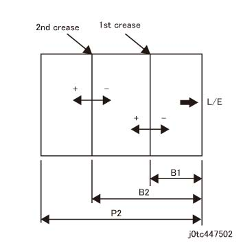

ADJ 47.3.2 折痕 (Z 折叠/C 折叠/Z 折叠 半/一半 纸张) 位置 调整 (DC128) 
目的
调整 折痕 (Z 折叠/C 折叠/Z 折叠 半/一半 纸张) 位置 to 指定值.
[检查]
输出 折叠 位置 printout or 调整 printout by 以下步骤:
[Revoria 按下 E1136G, ApeosPro C810G, Apeos C8180G, Apeos 7580G, Revoria 按下 EC1100, Revoria 按下 SC180G]
输入 Diag 模式, 选择 [维护 / Diagnostics] -> [调整 / 其他] -> [装订器 - 折叠 位置 调整] -> [折叠 位置 Printout], change to 以下 values 和/与 [确认 设置] 和 按下 [启动].
设置项目
设置值
折叠 功能
折痕 - Z 折叠
折痕 - C 折叠
折痕 - Z 折叠 半/一半 纸张
纸盘
选择 纸张 纸盘
选择 纸张 纸盘
选择 纸张 纸盘
1 面/2 面
1 面
1 面
1 面
装订 移位
无
无
无
Face Up/下
Face Up
Face Up
Face Up
号码 纸张的
1
1
1
Copies
1
1
1
Image
Grid (调整 折叠 位置)
Grid (调整 折叠 位置)
Grid (调整 折叠 位置)
[Revoria 按下 PC1120]
输入 the PC Diag screen, go 到 [子-系统 检查] screen, 和 选择 [DC128]. -> 从 the [折叠 功能] pull-下 menu, 选择 [折痕 调整], configure the 打印 设置 如下, 和 选择 [启动].
打印 设置 项目
设置值
折痕 调整
Z 折叠
C 折叠
Z 折叠 半/一半 纸张
纸盘
选择 纸张 纸盘
选择 纸张 纸盘
选择 纸张 纸盘
1 面/2 面
1 面
1 面
1 面
装订针
无
无
无
Face Up/下
Face Up
Face Up
Face Up
号码 纸张的
1
1
1
Copies
1
1
1
Image
Grid (调整 折叠 位置)
Grid (调整 折叠 位置)
Grid (调整 折叠 位置)
检查 折痕 位置 on 纸张 printed 出. (图 1)

(图 1) tc447502
项目
标称 值 (mm)
折痕 - Z 折叠
折痕 - C 折叠
折痕 - Z 折叠 半/一半 纸张
B1
(P2+4) x (1/3)-2
(P2+10) x (1/3)-2
P2 x (1/4)-1
B2
(P2+4) x (2/3)-2
(P2+10) x (2/3)-2
P2 x (1/2)
Accuracy of 折痕 位置 in respect of 标称 值
1 折痕 (折痕 of 92 mm或 更多 从 the 引线/导向 边缘 of 纸张): +/-1.0 mm
1 折痕 (折痕 最大到 92 mm 从 the 引线/导向 边缘 of 纸张): +/-1.5 mm
2 折痕 or 更多: +/-1.5 mm
调整
调整 by 以下步骤.
[ApeosPro C810G, Apeos C8180G, Apeos 7580G, Revoria 按下 EC1100, Revoria 按下 SC180G]
输入 Diag 模式, 选择 [维护 / Diagnostics] -> [调整 / 其他] -> [装订器 - 折叠 位置 调整] -> [折痕 - Z 折叠]/[折痕 - C 折叠]/[折痕 - Z 折叠 半/一半 纸张] -> 在...上 下一个 screen, 选择 项目 to 调整 从 以下, 和 按下 [确认 设置].
折痕 - Z 折叠
折痕 - C 折叠
折痕 - Z 折叠 半/一半 纸张
1st 折痕 涂布纸 52-105 gsm
1st 折痕 涂布纸 52-105 gsm
1st 折痕 涂布纸 52-105 gsm
1st 折痕 涂布纸 106-220 gsm
1st 折痕 涂布纸 106-220 gsm
1st 折痕 涂布纸 106-220 gsm
1st 折痕 涂布纸 221-350 gsm
1st 折痕 涂布纸 221-350 gsm
1st 折痕 涂布纸 221-350 gsm
1st 折痕 非涂布 52-105 gsm
1st 折痕 非涂布 52-105 gsm
1st 折痕 非涂布 52-105 gsm
1st 折痕 非涂布 106-220 gsm
1st 折痕 非涂布 106-220 gsm
1st 折痕 非涂布 106-220 gsm
1st 折痕 非涂布 221-350 gsm
1st 折痕 非涂布 221-350 gsm
1st 折痕 非涂布 221-350 gsm
1st 折痕 其他 52-105 gsm
1st 折痕 其他 52-105 gsm
1st 折痕 其他 52-105 gsm
1st 折痕 其他 106-220 gsm
1st 折痕 其他 106-220 gsm
1st 折痕 其他 106-220 gsm
1st 折痕 其他 221-350 gsm
1st 折痕 其他 221-350 gsm
1st 折痕 其他 221-350 gsm
2nd 折痕 涂布纸 52-105 gsm
2nd 折痕 涂布纸 52-105 gsm
2nd 折痕 涂布纸 52-105 gsm
2nd 折痕 涂布纸 106-220 gsm
2nd 折痕 涂布纸 106-220 gsm
2nd 折痕 涂布纸 106-220 gsm
2nd 折痕 涂布纸 221-350 gsm
2nd 折痕 涂布纸 221-350 gsm
2nd 折痕 涂布纸 221-350 gsm
2nd 折痕 非涂布 52-105 gsm
2nd 折痕 非涂布 52-105 gsm
2nd 折痕 非涂布 52-105 gsm
2nd 折痕 非涂布 106-220 gsm
2nd 折痕 非涂布 106-220 gsm
2nd 折痕 非涂布 106-220 gsm
2nd 折痕 非涂布 221-350 gsm
2nd 折痕 非涂布 221-350 gsm
2nd 折痕 非涂布 221-350 gsm
2nd 折痕 其他 52-105 gsm
2nd 折痕 其他 52-105 gsm
2nd 折痕 其他 52-105 gsm
2nd 折痕 其他 106-220 gsm
2nd 折痕 其他 106-220 gsm
2nd 折痕 其他 106-220 gsm
2nd 折痕 其他 221-350 gsm
2nd 折痕 其他 221-350 gsm
2nd 折痕 其他 221-350 gsm
Change the 值 和/与 参考 to 图 1, 和 按下 [Save].
Increasing the 数据 移动到 the [+] 侧面 当...时 decreasing it 移动到 the [-] 侧面.
NVM 1 计数 = 移动 by 0.1 mm.
返回 检查 1, 检查 折痕 和/与 [折叠 位置 Printout], 和 调整 it 直到 指定值 is obtained.
[Revoria 按下 PC1120]
输入 the PC Diag screen, go 到 [子-系统 检查] screen, 和 选择 [DC128]. -> 从 the [折叠 功能] pull-下 menu, 选择 [折痕 调整]. -> 选择 [值 在...之前 调整] 的 项目 to be adjusted 从 在...之中 以下.
折痕 调整 - Z 折叠
折痕 调整 - C 折叠
折痕 调整 - Z 折叠 半/一半 纸张
折痕 位置 4-1 调整 (Z 折叠, 1st 折痕) (非涂布, 52 to 105 gsm)
折痕 位置 2-1 调整 (C 折叠, 1st 折痕) (非涂布, 52 to 105 gsm)
折痕 位置 6-1 调整 (Z 折叠 半/一半 纸张, 1st 折痕) (非涂布, 52 to 105 gsm)
折痕 位置 5-1 调整 (Z 折叠, 2nd 折痕) (非涂布, 52 to 105 gsm)
折痕 位置 3-1 调整 (C 折叠, 2nd 折痕) (非涂布, 52 to 105 gsm)
折痕 位置 7-1 调整 (Z 折叠 半/一半 纸张, 2nd 折痕) (非涂布, 52 to 105 gsm)
折痕 位置 4-2 调整 (Z 折叠, 1st 折痕) (非涂布, 106 to 220 gsm)
折痕 位置 2-2 调整 (C 折叠, 1st 折痕) (非涂布, 106 to 220 gsm)
折痕 位置 6-2 调整 (Z 折叠 半/一半 纸张, 1st 折痕) (非涂布, 106 to 220 gsm)
折痕 位置 5-2 调整 (Z 折叠, 2nd 折痕) (非涂布, 106 to 220 gsm)
折痕 位置 3-2 调整 (C 折叠, 2nd 折痕) (非涂布, 106 to 220 gsm)
折痕 位置 7-2 调整 (Z 折叠 半/一半 纸张, 2nd 折痕) (非涂布, 106 to 220 gsm)
折痕 位置 4-3 调整 (Z 折叠, 1st 折痕) (非涂布, 221 to 350 gsm)
折痕 位置 2-3 调整 (C 折叠, 1st 折痕) (非涂布, 221 to 350 gsm)
折痕 位置 6-3 调整 (Z 折叠 半/一半 纸张, 1st 折痕) (非涂布, 221 to 350 gsm)
折痕 位置 5-3 调整 (Z 折叠, 2nd 折痕) (非涂布, 221 to 350 gsm)
折痕 位置 3-3 调整 (C 折叠, 2nd 折痕) (非涂布, 221 to 350 gsm)
折痕 位置 7-3 调整 (Z 折叠 半/一半 纸张, 2nd 折痕) (非涂布, 221 to 350 gsm)
折痕 位置 4-4 调整 (Z 折叠, 1st 折痕) (涂布纸, 52 to 105 gsm)
折痕 位置 2-4 调整 (C 折叠, 1st 折痕) (涂布纸, 52 to 105 gsm)
折痕 位置 6-4 调整 (Z 折叠 半/一半 纸张, 1st 折痕) (涂布纸, 52 to 105 gsm)
折痕 位置 5-4 调整 (Z 折叠, 2nd 折痕) (涂布纸, 52 to 105 gsm)
折痕 位置 3-4 调整 (C 折叠, 2nd 折痕) (涂布纸, 52 to 105 gsm)
折痕 位置 7-4 调整 (Z 折叠 半/一半 纸张, 2nd 折痕) (涂布纸, 52 to 105 gsm)
折痕 位置 4-5 调整 (Z 折叠, 1st 折痕) (涂布纸, 106 to 220 gsm)
折痕 位置 2-5 调整 (C 折叠, 1st 折痕) (涂布纸, 106 to 220 gsm)
折痕 位置 6-5 调整 (Z 折叠 半/一半 纸张, 1st 折痕) (涂布纸, 106 to 220 gsm)
折痕 位置 5-5 调整 (Z 折叠, 2nd 折痕) (涂布纸, 106 to 220 gsm)
折痕 位置 3-5 调整 (C 折叠, 2nd 折痕) (涂布纸, 106 to 220 gsm)
折痕 位置 7-5 调整 (Z 折叠 半/一半 纸张, 2nd 折痕) (涂布纸, 106 to 220 gsm)
折痕 位置 4-6 调整 (Z 折叠, 1st 折痕) (涂布纸, 221 to 350 gsm)
折痕 位置 2-6 调整 (C 折叠, 1st 折痕) (涂布纸, 221 to 350 gsm)
折痕 位置 6-6 调整 (Z 折叠 半/一半 纸张, 1st 折痕) (涂布纸, 221 to 350 gsm)
折痕 位置 5-6 调整 (Z 折叠, 2nd 折痕) (涂布纸, 221 to 350 gsm)
折痕 位置 3-6 调整 (C 折叠, 2nd 折痕) (涂布纸, 221 to 350 gsm)
折痕 位置 7-6 调整 (Z 折叠 半/一半 纸张, 2nd 折痕) (涂布纸, 221 to 350 gsm)
折痕 位置 4-7 调整 (Z 折叠, 1st 折痕) (其他, 52 to 105 gsm)
折痕 位置 2-7 调整 (C 折叠, 1st 折痕) (其他, 52 to 105 gsm)
折痕 位置 6-7 调整 (Z 折叠 半/一半 纸张, 1st 折痕) (其他, 52 to 105 gsm)
折痕 位置 5-7 调整 (Z 折叠, 2nd 折痕) (其他, 52 to 105 gsm)
折痕 位置 3-7 调整 (C 折叠, 2nd 折痕) (其他, 52 to 105 gsm)
折痕 位置 7-7 调整 (Z 折叠 半/一半 纸张, 2nd 折痕) (其他, 52 to 105 gsm)
折痕 位置 4-8 调整 (Z 折叠, 1st 折痕) (其他, 106 to 220 gsm)
折痕 位置 2-8 调整 (C 折叠, 1st 折痕) (其他, 106 to 220 gsm)
折痕 位置 6-8 调整 (Z 折叠 半/一半 纸张, 1st 折痕) (其他, 106 to 220 gsm)
折痕 位置 5-8 调整 (Z 折叠, 2nd 折痕) (其他, 106 to 220 gsm)
折痕 位置 3-8 调整 (C 折叠, 2nd 折痕) (其他, 106 to 220 gsm)
折痕 位置 7-8 调整 (Z 折叠 半/一半 纸张, 2nd 折痕) (其他, 106 to 220 gsm)
折痕 位置 4-9 调整 (Z 折叠, 1st 折痕) (其他, 221 to 350 gsm)
折痕 位置 2-9 调整 (C 折叠, 1st 折痕) (其他, 221 to 350 gsm)
折痕 位置 6-9 调整 (Z 折叠 半/一半 纸张, 1st 折痕) (其他, 221 to 350 gsm)
折痕 位置 5-9 调整 (Z 折叠, 2nd 折痕) (其他, 221 to 350 gsm)
折痕 位置 3-9 调整 (C 折叠, 2nd 折痕) (其他, 221 to 350 gsm)
折痕 位置 7-9 调整 (Z 折叠 半/一半 纸张, 2nd 折痕) (其他, 221 to 350 gsm)
请参阅 图 1 和 use the [+] 和 [-] buttons to change the 值*, configure the 打印 设置 as in 检查 1, 和 选择 [启动].
Increasing the 数据 移动到 the [+] 侧面 当...时 decreasing it 移动到 the [-] 侧面.
NVM 1 计数 = 移动 by 0.1 mm.
*: 此 可以 也 be 已完成 by 双面/双-clicking to 选择 值 和 然后 changing it by Keypad 入口.
当...时 the 调整 printout is 输出, use it to 检查 折痕 再次 和 调整 直到 指定值 is achieved.
在...之后 completing the 调整, 选择 [设置] to 更新 the NVM值 的 主机.
[Revoria 按下 E1136G]
输入 Diag 模式, 选择 [维护 / Diagnostics] -> [调整 / 其他] -> [装订器 - 折叠 位置 调整] -> [折痕 - Z 折叠]/[折痕 - C 折叠]/[折痕 - Z 折叠 半/一半 纸张] -> 在...上 下一个 screen, 选择 项目 to 调整 从 以下, 和 按下 [确认 设置].
折痕 - Z 折叠
折痕 - C 折叠
折痕 - Z 折叠 半/一半 纸张
1st 折痕 灯/光线 光面 卡纸
1st 折痕 灯/光线 光面 卡纸
1st 折痕 灯/光线 光面 卡纸
1st 折痕 涂布纸 1A/1B, 光面 卡纸
1st 折痕 涂布纸 1A/1B, 光面 卡纸
1st 折痕 涂布纸 1A/1B, 光面 卡纸
1st 折痕 Heavy 光面 卡纸, X-HW 光面 卡纸
1st 折痕 Heavy 光面 卡纸, X-HW 光面 卡纸
1st 折痕 Heavy 光面 卡纸, X-HW 光面 卡纸
1st 折痕 普通纸
1st 折痕 普通纸
1st 折痕 普通纸
1st 折痕 轻量 卡纸, 卡纸
1st 折痕 轻量 卡纸, 卡纸
1st 折痕 轻量 卡纸, 卡纸
1st 折痕 重磅 卡纸, Extra Heavy 卡纸
1st 折痕 重磅 卡纸, Extra Heavy 卡纸
1st 折痕 重磅 卡纸, Extra Heavy 卡纸
1st 折痕 再生 纸张
1st 折痕 再生 纸张
1st 折痕 再生 纸张
2nd 折痕 灯/光线 光面 卡纸
2nd 折痕 灯/光线 光面 卡纸
2nd 折痕 灯/光线 光面 卡纸
2nd 折痕 涂布纸 1A/1B, 光面 卡纸
2nd 折痕 涂布纸 1A/1B, 光面 卡纸
2nd 折痕 涂布纸 1A/1B, 光面 卡纸
2nd 折痕 Heavy 光面 卡纸, X-HW 光面 卡纸
2nd 折痕 Heavy 光面 卡纸, X-HW 光面 卡纸
2nd 折痕 Heavy 光面 卡纸, X-HW 光面 卡纸
2nd 折痕 普通纸
2nd 折痕 普通纸
2nd 折痕 普通纸
2nd 折痕 轻量 卡纸, 卡纸
2nd 折痕 轻量 卡纸, 卡纸
2nd 折痕 轻量 卡纸, 卡纸
2nd 折痕 重磅 卡纸, Extra Heavy 卡纸
2nd 折痕 重磅 卡纸, Extra Heavy 卡纸
2nd 折痕 重磅 卡纸, Extra Heavy 卡纸
2nd 折痕 再生 纸张
2nd 折痕 再生 纸张
2nd 折痕 再生 纸张
Change the 值 和/与 参考 to 图 1, 和 按下 [Save].
Increasing the 数据 移动到 the [+] 侧面 当...时 decreasing it 移动到 the [-] 侧面.
NVM 1 计数 = 移动 by 0.1 mm.
返回 检查 1, 检查 折痕 和/与 [折叠 位置 Printout], 和 调整 it 直到 指定值 is obtained.